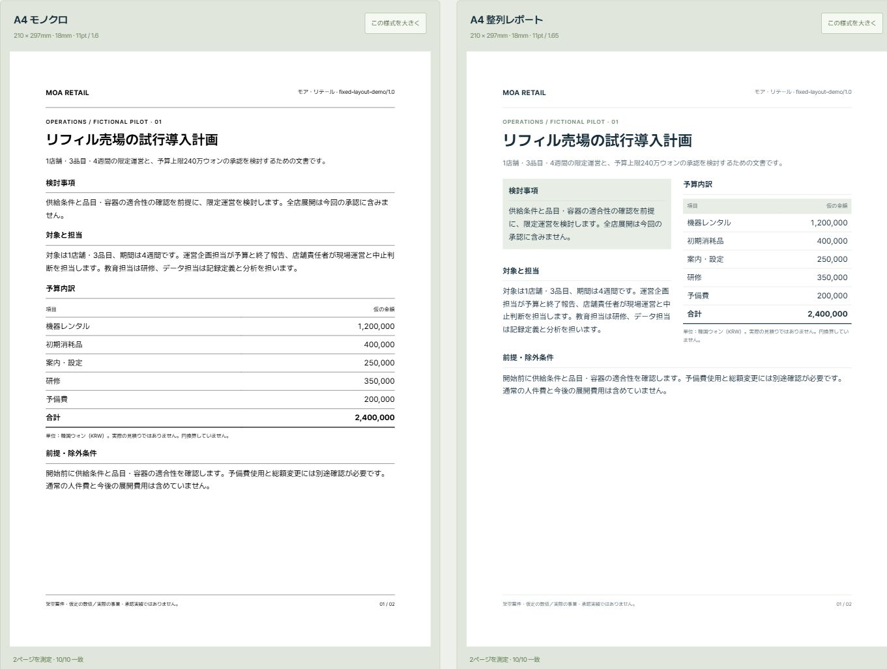

01 / RULES
01 / RULES決めたルールを保つ
同じ2ページを白黒A4・整列レポート・横型提案で表示。ページや言語が変わっても、余白・文字・色・数値整列を維持する例です。
固定ルールを比較する ↗Document Studioは、参考資料から文体やデザインの特徴を整理し、人が確認したルールを次の資料作成で使うための、オープンソースのスキル集です。
このサイトでは、作成済みの文書例を閲覧できます。実際の生成は、導入したAI環境で行います。

何を確かめたいかで、見る例を選べます。登録やインストールは不要です。
01 / RULES同じ2ページを白黒A4・整列レポート・横型提案で表示。ページや言語が変わっても、余白・文字・色・数値整列を維持する例です。
固定ルールを比較する ↗ 02 / PURPOSE
02 / PURPOSE同じ案件を、企画提案書・決裁サマリー・業務ガイドに。判断する人と行動する人で、情報の順序を変える例です。
目的別の文書を見る ↗ 03 / EXPRESSION
03 / EXPRESSION実験的・没入型の設定で、要点を1ページに再編集。数値と条件を保ちながら、比喩や読む順序を変える例です。
創造性を広げた例を見る ↗作例は架空の案件です。会社名・目標・費用は仮定で、予算は240万ウォン（KRW）。画像は生成コンセプトです。表示の測定は静的HTML例に限り、AIの新規生成や実際の企業成果を検証したものではありません。
会社が守る基準を確認し、依頼の目的に合う資料を作る流れです。
利用権限のあるPDF・PPTXから、文体やデザインの特徴とその根拠を整理します。
用語・文体・デザイン・検討基準のうち、次の仕事でも参照するものを確認します。
確認した基準を参照し、読み手の判断や行動に必要な内容を構成します。
確認したルールをまとめて管理する単位がCompany Packです。作例の制作基準は、実在企業が承認したCompany Packとは区別しています。
用語・文体、数値や出典、ブランドや指定様式のルール。文書間で変わってはいけない条件を維持します。
章立て、説明の順序、図や画像の役割。固定レイアウトを指定した資料では、その配置ルールも守ります。
CodexまたはChatGPTの対応環境へ導入して使います。最初は公開可能な架空案件で、内容と表示を確認してください。
導入ガイド ↗架空の小売企業の運営責任者が検討する、4週間の試行導入の企画提案書を、日本語のHTMLで作成してください。
1店舗・3品目・予算上限240万ウォン（KRW）という仮定を維持してください。
費用内訳、担当者、週別の計画、成功基準と中止条件を含めてください。
仮定と実際に確認した事実を区別し、実施した確認と未確認の範囲を示してください。
実験段階のalpha版です。スキルの導入、執筆、フォント、ブラウザー表示、PPTX変換はそれぞれ実行環境と確認が必要です。
非公開の社内資料を基にしたパックの内部配布は、公開エクスポーターでは未対応です。private/restricted資料から作成したCompany Packはブロックされます。モデル間の同一品質や組織の生産性改善を保証するものではありません。
管理者向けの仕様と制約 ↗AIを実際の仕事でどう使うか、試しながら記録する個人の公開実験です。関心があれば、GitHubのStarで保存してください。